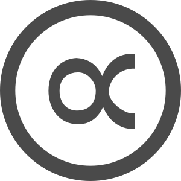

7th October 2016
AlphaSheets Proposal
Redesigning the AlphaSheets landing page.
Josh Pitzalis
Hello Alex,
After our initial conversations, I understood that you are looking for a 'sleek and to the point' landing page for Alphasheets. The goal was to rethink the current gestalt so that your landing page conveys an easy of use, efficient, and powerful yet flexibile product.
I have spent the last 10 days reviewing the example websites you gave me, along with the redesign that you did not like, and using the information from the brief you sent me, I propose the following design direction.

Given the logical nature and technical purpose of the product, I propose we focus the theme of the redesign around the aesthetic of 'Structure'.
I have done this in three ways:
- I have used a faded background image that uses the imagery of molcular structures. I have only used one image so that this is not overstated, the idea is to suggest structurerather than chemistry.
- The second way I have this is by using molecular diagrams for the icons for the feature images. Again, subtle but consistent with the theme.
- The last, and most prominent, way that I have incorporated the idea of structure into the visual theme is with a structured, angular typface for the dispay font. I have balanced this with a serious Source Sans Pro for the body typeface so that the content is clear, professional an easy to read.
I have used a clean, minimal design communicates Ease of use and efficiency, while a clear palette and a strong, modern typeface help communicate power.
Colour
I chose a monochromaticBlue Palatte. Colour psychology suggests that blue has strong cultural connotations to intellectual products, products that center around logic and/or communications. Colour psychology also suggests that blue communicates trust, efficiency, and logic.
Whether or not any of this is true, I wanted to use a cooler colour (so greens, purles or blues) rather than a warmer palette. Hoever I wanted to keep things serious and professional so I went for a darker tone, one that gets darker as you scroll down.
The reason I went with high contrast, monochromatic palatte is to avoid any potential problems with people that have colour blindness.

From the left, first is people who can see no colour at all (this is very rare), then red colour blindness (this is the most common), then blue colour blindess and finally green.
Resposnive Layouts
The is not very much variation between views since the design relies on a single column of text. There are some changes to the way the features stack on top of each other and the pricing table and the mobile view.

Design Options
Headers
I didn't want to lock you into having to use the image I picked out for teh redesign (in the center), I have foudn another image to teh left and I also wanted to show that teh design works beautiflly with no image whatsoever.

Pricing Page
You asked for a seperate pricing page so I wanted to show you what it looks like if we split the pricing section from the main design and have it on a seperate page. After a lot of back and forth between the two options, I recommend keeping the pricing in the landing page.

Footers
I wanted to give you teh option to have a contact button (center) instead your contact email spelt out in the footer (right). A third option would be to embed a aform in the footer. there is no need to build a backend to handle form submissions, we could just use something simple like formspree.io to handle communication.
Download Page
You also asked for a nodescript download page for alphasheets based on teh sublime 3 download page.
Other Ideas
I have added an FAQ to the page and answered four generic questions. This is entirely optional but I propose it because micro FAQ's are a great way to reassure people, build credibility, and address common concerns without forcing people to make the effort to write to you.
I wanted to weight the page down with some credibility marker because I didn't have reviews and testimonials to work with. If you have reviews and press mentions we could add them instead or as well.
I have used contrast and size to make the call-to-action buttons obvious frpm 20 steps away from the computer screen. This leaves teh option to add colour if needed but doesn't rely on it. I have also suggested a more decisive wording options that we can try out.
I also played around with teh logo and wanted to present a more symetrical design to match the new look. I realise you did not ask me to do this, there is no reason to use it, but I wanted to show it to you incase you like it.
Costs and Timeline
The cost of designing a one page proposal is $500. This has been paid and there are no additional costs associated with this project.
If you would like to make deisgn changes or if you would like me to spend some time developing the logo (or other graphic elements), I would be more than happy to at my current hourly rate, which is $30 an hour.
If you would like me to code the proposed design, I can do so on an hourly basis. I don't think it would take more than 5-6 hours to code and style the two pages proposed. I can deliver the code in a private gihub repo and transfer the ownership to you.
Next Steps
Please take as long as you need to think through the proposal and let me knwo if there are any chnages you woudl like me to make. If you would prefer, we can talk on a skype call at a time that works for you at some point in the coming week. I am currently +5:30 GMT.
Please let me know if you have any question or concerns about the direction I have taken, or if I have misunderstoodanything. If anything was unclear, just email me and I will repsond as soon as possible. I hope you enjoyed the proposal and thank you for giving me the opportunity to work on this.
Joshua Pittman Pitzalis
Web Designer